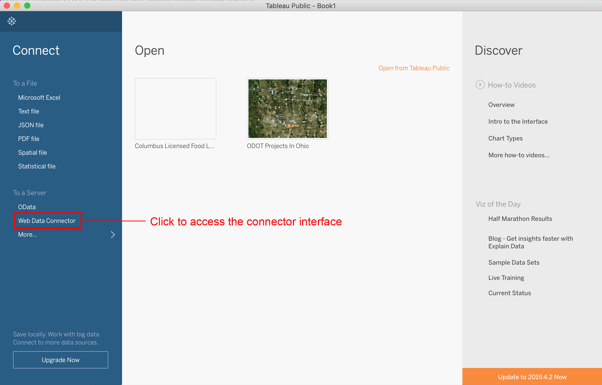
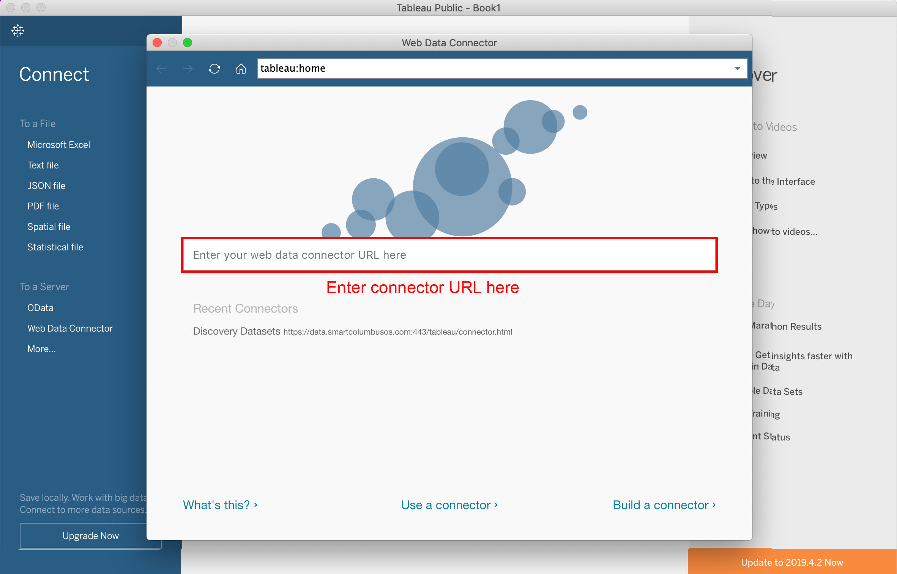
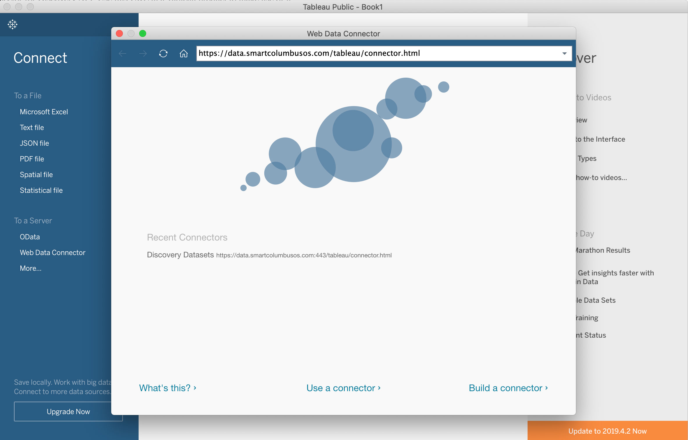
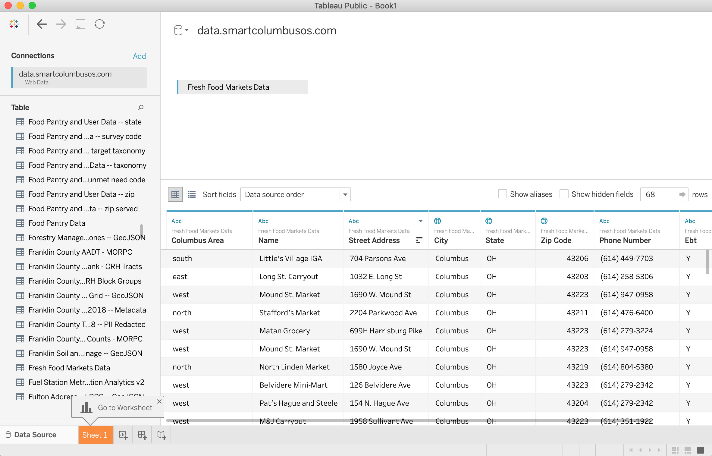
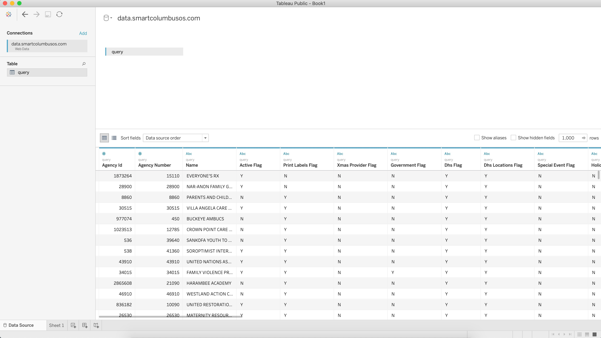

Click the URL below, and Ctrl-C (Win) or CMD-C (Mac) to copy to your clipboard:
Click "Web Data Connector" in the Tableau Interface:
Enter the connector URL into the input field and press enter:
You will see an interactive connector page with 2 main options, "Discovery datasets" or "Submit a custom query":
If you chose to discover datasets, then you'll be presented with a list of them:
If you chose to peform a custom query, then you'll be presented with a single table of data:
